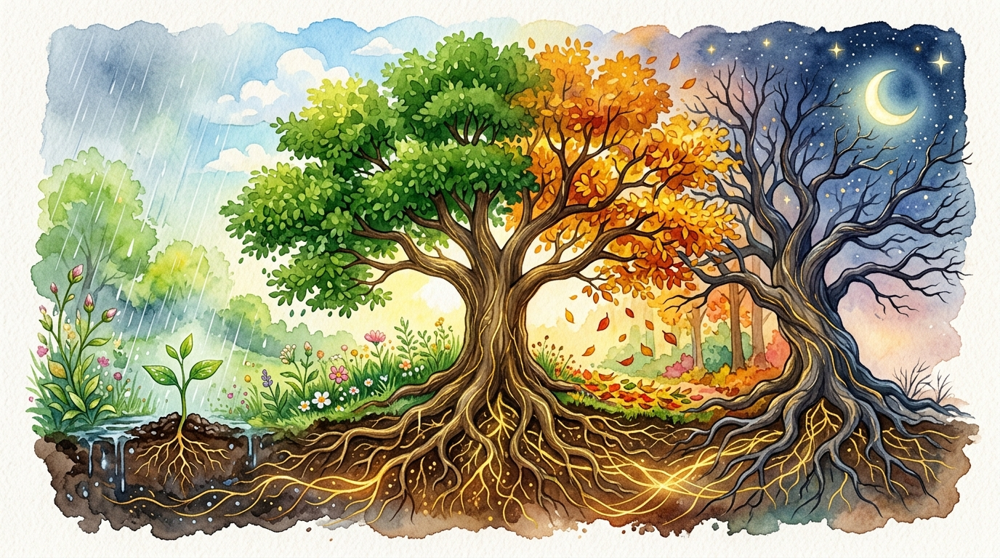

나만의 인생 방향성을 찾는
가장 명확하고 깊이 있는 질문.
남들의 채점표와 세상의 기대에서 벗어나, 5단계 산파술 대화를 통해 내면의 3대 축을 세우는 1:1 라이프 멘토링
부모님 기대 탈피 & 진짜 호기심 해방 4단계 시나리오
남들의 성적 채점표 대신, 밤새워도 재미있는 나만의 순수 몰입 영역을 소크라테스 산파술로 규명합니다.
핵심 기능 둘러보기
인생의 기회비용을 아끼고 확실한 방향을 잡는 4가지 독창적 솔루션
5단계 소크라테스 1:1 질문 코칭
세상의 정답을 주입하지 않습니다. 5단계 산파술 대화를 통해 남들의 기대와 시선을 분리하고, 평생 흔들리지 않을 '나만의 3대 인생 축'을 스스로 도출하도록 이끕니다.
지금 대화 체험하기3초 본능 스와이프
머리의 복잡한 계산을 끄고, 몸의 직관이 가리키는 호불호를 6개 자극 카드로 즉시 진단합니다.
멘토 4인의 입체적 조언
소크라테스, 스티브 잡스, 레이 달리오, 마르쿠스 아우렐리우스의 서로 다른 시선으로 내 고민을 교차 검증합니다.
🚨 3분 감정 쿨다운
홧김 퇴사나 충동적 결정을 방지하는 실시간 마인드 브레이크 & 골든타임 행동 지침을 제공합니다.
감정이 격해질 때 후회 없는 결정을 돕는 3분 쿨다운
상사와의 갈등, 번아웃으로 홧김에 퇴사하거나 모든 것을 포기하고 싶을 때, 감정을 차분히 가라앉히고 실수를 예방합니다.

4-7-8 신경계 이완 호흡 가이드
화면의 원을 보며 호흡을 맞추면 1분 안에 뇌의 편도체 흥분이 가라앉습니다.
1 현재 가장 힘들거나 충동적으로 벗어나고 싶은 상황은 무엇인가요?
2 지금 나를 괴롭히는 생각의 함정 선택
왼쪽에서 상황을 입력하고 솔루션을 확인하시면
"내일 아침 10시까지 잠시 미뤄둘 3가지"가 안내됩니다.
주간 마음 상태 & 방향성 점검 리포트
나의 마음 상태와 주도권을 주기적으로 점검하며 삶의 균형을 유지합니다.
최근 7일간 마음 상태 변화 추세
이번 주 점검 데이터이번 주 핵심 실천 가이드
- 에너지가 소진되었던 이유: 타인의 무리한 부탁이나 요구를 거절하지 못하고 과도하게 수용했습니다.
- 다음 주 실천 과제: 나의 일정표에 '나만을 위한 집중 시간 2시간'을 미리 예약하고 꼭 지켜보세요.
- 기대 효과: 내면의 안정과 업무 만족도가 크게 향상됩니다.
오늘의 1분 주권 실천 체크인 (Daily Check-in)
매일 1분 성찰을 기록하면 주간 방향성 리포트가 자동으로 고도화됩니다.
인생 핵심 목표 연동 21일 습관 체인
목표와 연결되지 않은 습관은 쉽게 무너집니다. 뇌신경 회로가 영구 재배선되는 21일간 매일 점을 이어가세요.
신경 가소성 뇌 시냅스 성장 비주얼라이저
루틴을 실천할 때마다 뇌세포(뉴런)가 물리적으로 연결되고 축삭돌기 미엘린 수초가 두꺼워집니다.
인생 목표 달성을 위한 행동 루틴 AI 정밀 진단
현재 당신의 일상 행동이 인생 10년 북극성 목표로 수렴하고 있는지 4단계로 분석합니다.
매일 밤 40분의 무의식 도파민 도피는 연간 243시간(온전한 업무일 기준 30일)에 달하는 인생 기회비용을 침식합니다. 대체 마이크로 루틴(스마트폰 거실 충전 + 3분 528Hz 호흡)으로 전환 시 집중력이 3.8배 상승합니다.

나만의 생명의 나무,
사계절을 지나 단단히 뿌리내리다.
혼란의 겨울과 싹트는 봄, 치열한 여름을 지나온 당신의 성찰 기록은 결코 사라지지 않습니다.
당신이 매일 남긴 감정과 결정들이 모여 흔들리지 않는 굳건한 인생의 나무를 키워냅니다.
30일간의 감정 공명 히트맵
색이 짙을수록 내면의 몰입도와 평온 주권이 높았던 날입니다.
영혼의 성장 마일스톤
삶의 기준이 바로 설 때마다 잠금 해제되는 내면의 훈장
내가 내린 주권적 결단 아카이브 & 사후 검토
결정 당시의 두려움과 선택의 이유를 기록하고, 30일/90일 후 결과를 되돌아보며 의사결정 근육을 키웁니다.
멘토 4인의 관점 (소크라테스·잡스·달리오·아우렐리우스)
진로·이직·사업 등 중요한 결정을 앞두고 있을 때, 시대의 멘토 4인의 깊이 있는 조언을 들어보세요.

3초 본능 스와이프: 진짜 좋아하는 것 vs 힘든 것
머리로 계산하지 말고, 3초 안에 끌리는 대로 선택해보세요. (왼쪽: 정말 힘들고 싫은 것 / 오른쪽: 생각만 해도 즐거운 것)
10년 후 미래 시나리오: 타인의 기대 vs 나만의 길
오늘 내가 어떤 선택을 내리는가에 따라 마주하게 될 10년 뒤의 두 가지 삶

🌑 시나리오 A: 남들의 기준에 맞추어 살아온 10년 뒤
10년 뒤 나의 일상: 남들의 시선과 안전한 정답만 좇아 살아온 결과, 겉으로는 무난해 보이지만 매일 아침 출근길마다 마음 깊은 곳에서 허전함이 밀려옵니다. "그때 왜 내가 진짜 원하던 일에 용기 내보지 않았을까? 내 삶은 온통 남의 기대에 맞추느라 흘러가버렸다."
☀️ 시나리오 B: 나만의 방향성을 갖고 주도적으로 살아온 10년 뒤
10년 뒤 나의 일상: 질문을 통해 나만의 기준을 세우고 작은 실천부터 차근차근 시작한 결과, 시간과 삶의 완전한 주도권을 확보했습니다. 타인의 눈치를 보지 않고, 내가 진정으로 잘하고 좋아하는 일로 세상에 당당하게 가치를 전하며 살아갑니다.
인생 2막 은퇴 나침반: 명함 없는 삶의 4대 기둥 설계
30년 조직의 명함과 직함을 내려놓았을 때 비로소 시작되는 온전한 나만의 삶.
평생 쌓은 지혜를 자산화하고, 출퇴근 없는 일상의 시간 주권을 확립하는 인생의 황금기 솔루션.
인생 2막을 지탱하는 4대 황금 기둥
시니어 자율성 아키텍처지혜의 자산화 (Wisdom Capital)
30년간 치열하게 쌓은 현장 노하우와 문제 해결 역량은 대체 불가능한 고유 자산입니다. 후배 세대를 위한 자문, 칼럼, 멘토링, 전문 강의를 통해 지속적인 자존감과 부가가치를 만듭니다.
하루 3블록 시간 주권 (Time Sovereignty)
출퇴근 알람이 사라졌을 때 찾아오는 공허함과 시간 부자의 역설을 예방합니다. [오전: 2시간 배움·글쓰기] [오후: 3시간 산책·사회적 교류] [저녁: 가족·내면 쉼]의 3블록 황금 루틴을 확립합니다.
수평적 세대 공존 (Generative Circle)
조직 내 수직적 위계나 과거의 직함에 갇히지 않습니다. 청년 스타트업 창업가들과 친구처럼 교류하며 지혜를 나누고, 나이와 무관하게 배움을 주고받는 건강한 지적 커뮤니티를 구축합니다.
영혼의 순수 몰입 (Soulful Mastery)
생계를 위해 30년간 미뤄두었던 나만의 진정한 취향과 호기심을 부활시킵니다. 목공, 악기, 원예, 고전문학, 역사 탐방 등 평가받지 않는 순수한 몰입 속에서 뇌의 젊음과 내면의 평온을 회복합니다.
🎯 나의 은퇴 멘탈 & 시간 주권 준비도 진단
3가지 문항을 체크하고, 은퇴 후 가장 먼저 보강해야 할 내면의 축을 확인해보세요.
나만의 시크릿 룸 & 미래 현실화 성소
"생각은 자석이며, 주권으로 선언한 비전은 반드시 물리적 현실로 이끌려옵니다." — 나를 알기 위해 질문에 답할 때마다 내 아바타가 성장하고, 매일 가꾸는 비전보드가 현실이 되는 평생의 동반자 공간입니다.
🦊 Lv.3 지혜를 찾는 꼬마 여우
질문에 답하고 내면을 탐색할 때마다 아기 동물에서 황금 주권의 영물로 진화합니다
『시크릿』 미래 현실화 비전보드 (Dream Board)
내가 원하는 미래를 매일 선명하게 시각화하면, 무의식이 그 길을 반드시 찾아냅니다
 🏡 나의 이상적 공간
🏡 나의 이상적 공간
『시크릿』 성공법칙 3단계 현실화 엔진 (Ask - Believe - Receive)
"원하는 것을 구하고(Ask), 이미 이루어졌음을 믿고(Believe), 기쁘게 받아들이라(Receive)."
나만의 소울 마인드 일기장 (Mind Journal)
매일 나의 생각과 감정을 진솔하게 기록하면, 멘토가 이를 평생 기억하고 분석하여 진짜 원하는 것을 찾는 동반자가 됩니다.
결정적 순간의 인생 의사결정 나침반
이직, 창업, 진로 변경, 퇴사 등 인생의 중대 기로에서 4대 과학적·철학적 렌즈로 가장 후회 없는 선택을 도출합니다.
행동 루틴 분석 및 발목 잡는 습관 교정기
목표를 이루지 못하는 것은 의지의 부족이 아닌 '루틴 시스템의 오류'입니다. 신호-열망-반응-보상 4단계로 습관을 재배선합니다.
심장-뇌 일관성 (Heart-Brain Coherence) 4-7-8 바이오 호흡
하트매스 연구소(HeartMath) 과학 검증: 불안에 갇힌 편도체(Amygdala)를 진정시키고, 전두엽의 직관과 집행 기능을 100% 동기화합니다.
심장이 고른 리듬으로 뛸 때, 인간의 두뇌는 비로소 과거의 후회와 미래의 불안에서 벗어나 현재의 절대적 지혜에 접속합니다.